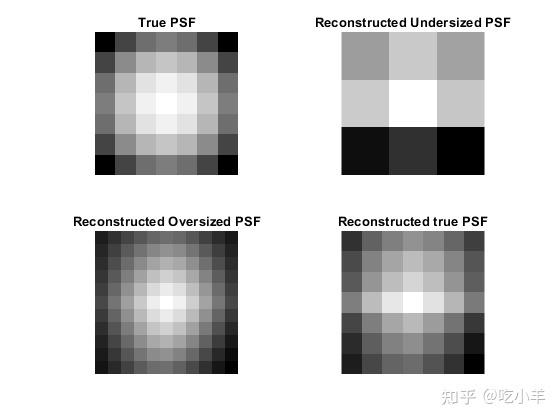
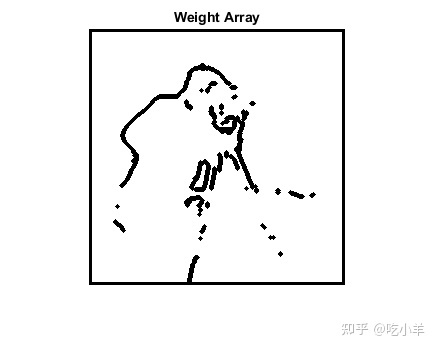
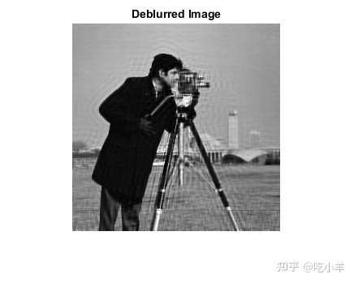

Home
本示例说明如何使用盲反卷积对图像进行模糊处理。当不知道有关失真（模糊和噪声）的信息时，使用盲反卷积算法可以有好的效果。该算法可同时还原图像和点扩展函数（PSF）。每次迭代都使用加速的衰减Richardson-Lucy算法。可以使用其他光学系统（例如相机）特性作为输入参数，以帮助提高图像恢复的质量。PSF约束可以通过用户指定的函数传入。
步骤1：读取图片
将灰度图像读取到工作区中。deconvblind函数可以处理任何维数的数组。
I = imread('cameraman.tif');
figure;imshow(I);title('Original Image');
text(size(I,2),size(I,1)+15, ...
'Image courtesy of Massachusetts Institute of Technology', ...
'FontSize',7,'HorizontalAlignment','right');
步骤2：模拟模糊
模拟可能模糊的真实图像（例如，由于相机运动或焦点不足）。该示例通过将高斯滤波器与真实图像进行卷积来模拟模糊（使用imfilter）。然后，高斯滤波器表示一个点扩展函数PSF。
PSF = fspecial('gaussian',7,10);
Blurred = imfilter(I,PSF,'symmetric','conv');
imshow(Blurred)
title('Blurred Image')
步骤3：使用各种大小的PSF恢复模糊的图像
为了说明了解真实PSF大小的重要性，此示例执行了三个还原。每次PSF重建都从一个统一的数组（一个数组）开始。
第一次还原J1和P1，使用较小的数组UNDERPSF进行PSF的初始猜测。UNDERPSF数组每个维度尺寸都比真正的PSF少4个像素。
UNDERPSF = ones(size(PSF)-4);
[J1,P1] = deconvblind(Blurred,UNDERPSF);
imshow(J1)
title('Deblurring with Undersized PSF')
第二次恢复J2和P2，使用一个由1组成的数组OVERPSF，用于初始PSF，该PSF在每个维度上的尺寸比真实PSF长4像素。
OVERPSF = padarray(UNDERPSF,[4 4],'replicate','both');
[J2,P2] = deconvblind(Blurred,OVERPSF);
imshow(J2)
title('Deblurring with Oversized PSF')
第三个恢复J3和P3，使用一个由1组成的数组INITPSF，构成与实际PSF大小完全相同的初始PSF。
INITPSF = padarray(UNDERPSF,[2 2],'replicate','both');
[J3,P3] = deconvblind(Blurred,INITPSF);
imshow(J3)
title('Deblurring with INITPSF')
步骤4：分析还原的PSF
所有这三个还原也会产生PSF。下图显示了对重构的PSF的分析如何帮助猜测初始PSF的正确大小。在真正的PSF（高斯滤波器）中，最大值在中心（白色），而在边界处减小（黑色）。
figure;
subplot(2,2,1)
imshow(PSF,[],'InitialMagnification','fit')
title('True PSF')
subplot(222)
imshow(P1,[],'InitialMagnification','fit')
title('Reconstructed Undersized PSF')
subplot(2,2,3)
imshow(P2,[],'InitialMagnification','fit')
title('Reconstructed Oversized PSF')
subplot(2,2,4)
imshow(P3,[],'InitialMagnification','fit')
title('Reconstructed true PSF')

第一次恢复中重建的PSFP1显然不适合受约束的尺寸。边界处的信号变化很大。与模糊图像Blurred相比，相应的图像J1不会显示出任何改善的清晰度。
在第二次修复中重建的PSFP2的边缘变得非常光滑。这意味着还原可以处理较小尺寸的PSF。相应的图像J2显示了一些去模糊，但由于振铃效应而受到严重破坏。
最后，在第三次修复中重建的PSFP3介于P1和之间P2。阵列P3非常类似于真实的PSF。相应的图像J3明显改善；但是它仍然被振铃效应损坏。
步骤5：提升还原效果
还原图像J3中的振铃出现在图像中强度强烈对比的区域和图像边界处。本示例说明如何通过指定加权函数来降低振铃效应。该算法会在还原图像和PSF时根据WEIGHT阵列对每个像素加权。在我们的示例中，我们首先使用edge函数查找“清晰”像素。通过反复试验，我们确定理想的阈值水平为0.08。
WEIGHT = edge(Blurred,'sobel',.08);
为了扩大面积，我们使用imdilate并传入一个结构元素se。
se = strel('disk',2);
WEIGHT = 1-double(imdilate(WEIGHT,se));
靠近边框的像素也被赋值为0。
WEIGHT([1:3 end-(0:2)],:) = 0;
WEIGHT(:,[1:3 end-(0:2)]) = 0;
figure
imshow(WEIGHT)
title('Weight Array')

通过使用WEIGHT数组调用deconvblind函数，并增加迭代次数（30）来恢复图像。几乎所有的振铃效应都被抑制。
[J,P] = deconvblind(Blurred,INITPSF,30,[],WEIGHT);
imshow(J)
title('Deblurred Image')
步骤6：在PSF恢复上使用其他约束
该示例说明了如何在PSF上指定其他约束。下面的函数FUN返回修改后的PSF数组，deconvblind将其用于下一次迭代。
在这个例子中，FUN在PSF的各个维度上去除P1和P2数量的像素数，然后以零填充，确保阵列为其原始大小。此操作不改变PSF中心的值，也有效地让PSF的大小减少了2*P1和2*P2个像素。
P1 = 2; P2 = 2; FUN = @(PSF) padarray(PSF(P1+1:end-P1,P2+1:end-P2),[P1 P2]);
匿名函数FUN传递到deconvblind中。有关为函数提供其他参数的信息，请参见MATLAB Mathematics文档中函数FUN的“参数化函数”部分。
在此示例中，初始PSF的大小OVERPSF比真实PSF大4个像素。在FUN中将P1 = 2和P2 = 2设置为参数，可以使OVERPSF有价值的空间与真实PSF的大小相同。因此，结果JF和PF与在正确大小的PSF且无FUN调用的情况下进行反卷积的结果——步骤4中的J和P——相似。
[JF,PF] = deconvblind(Blurred,OVERPSF,30,[],WEIGHT,FUN);
imshow(JF)
title('Deblurred Image')

如果我们使用了过大的初始PSF，OVERPSF，却缺少约束函数FUN，则得到的图像将类似于在步骤3中获得的不令人满意的结果J2。
注意，FUN之前任何未指定的参数都可以省略，例如本例中的DAMPAR和READOUT，不需要的占位符，（[]）。
======================================================================
我的测试结果及程序
下面是我测试的代码：

注：本文根据MATLAB官网内容修改而成。